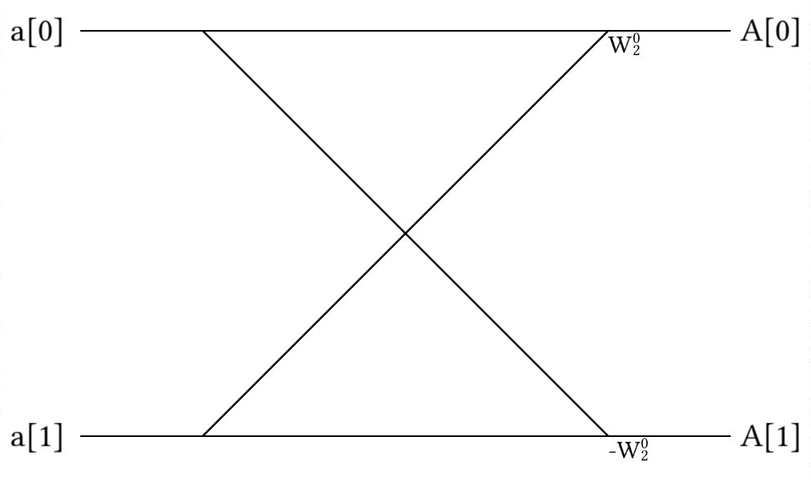

What Makes a Fourier Transform Fast?
If there were ever an algorithm to radically change the landscape of computer science and engineering by making seemingly impossible problems possible, it would be the Fast Fourier Transform (FFT). On the surface, the algorithm seems like a simple application of recursion, and in principle, that is exactly what it is; however, the Fourier Transform is no ordinary transform -- it allows researchers and engineers to easily bounce back and forth between real space and frequency space and is the heart of many physics and engineering applications. From calculating superfluid vortex positions to super-resolution imaging, Fourier Transforms lay at the heart of many scientific disciplines and are essential to many algorithms we will cover later in this book.
Simply put, the Fourier Transform is a beautiful application of complex number systems; however, it would rarely be used today if not for the ability to quickly perform the operation with Fast Fourier Transform, first introduced by the great Frederick Gauss in 1805 and later independently discovered by James Cooley and John Tukey in 1965 [ct1965]. Gauss (of course) already had too many things named after him and Cooley and Tukey both had cooler names, so the most common algorithm for FFTs today is known as the Cooley-Tukey algorithm.
What is a Fourier Transform?
To an outsider, the Fourier Transform looks like a mathematical mess -- certainly a far cry from the heroic portal between two domains I have depicted it to be; however, like most things, it's not as bad as it initially appears to be. So, here it is in all it's glory!
\( F(\xi) = \int_{-\infty} ^\infty f(x) e^{-2 \pi i x \xi} dx \)
and
\( f(x) = \int_{-\infty} ^\infty F(\xi) e^{2 \pi i \xi x} d\xi \)
Where \( F(\xi) \) represents a function in frequency space, \( \xi \) represents a value in frequency space, \( f(x) \) represents a function in real space, and \( x \) represents a value in the real space. Note here that the only difference between the two exponential terms is a minus sign in the transformation to frequency space. As I mentioned, this is not intuitive syntax, so please allow me to explain a bit.
Firstly, what does the Fourier Transform do?
If we take a sum sinusoidal functions (like \( \sin(\omega t) \) or \( \cos(\omega t) \)), we might find a complicated mess of waves between \( \pm 1 \). Each constituent wave can be described by only one value: \( \omega \). So, instead of representing these curves as seen above, we could instead describe them as peaks in frequency space, as shown below.

This is what the Fourier Transform does! After performing the transform, it is now much, much easier to understand precisely which frequencies are in our waveform, which is essential to most areas of signal processing.
Now, how does this relate to the transformations above? Well, the easiest way is to substitute in the Euler's formula:
\( e^{2 \pi i \theta} = \cos(2 \pi \theta) + i \sin(2 \pi \theta) \)
This clearly turns our function in frequency space into:
\( F(\xi) = \int_{-\infty} ^\infty f(x) (\cos(-2 \pi x \xi) + i \sin(-2 \pi x \xi))dx \)
and our function in real space into:
\( f(x) = \int_{-\infty} ^\infty F(\xi) (\cos(2 \pi \xi x) + i \sin(2 \pi \xi x)) d\xi \)
Here, the \( \sin \) and \( \cos \) functions are clearly written in the formulas, so it looks much friendlier, right? This means that a point in real space is defined by the integral over all space of it's corresponding frequency function multiplied by sinusoidal oscillations.
Truth be told, even after seeing this math, I still didn't understand Fourier Transforms. Truth be told, I didn't understand it fully until I discretized real and frequency space to create the Discrete Fourier Transform (DFT), which is the only way to implement Fourier Transforms in code.
What is a Discrete Fourier Transform?
In principle, the Discrete Fourier Transform (DFT) is simply the Fourier transform with summations instead of integrals:
\( X_k = \sum_{n=0}^{N-1} x_n \cdot e^{-2 \pi i k n / N} \)
and
\( x_n = \frac{1}{N} \sum_{k=0}^{N-1} X_k \cdot e^{2 \pi i k n / N} \)
Where \( X_n \) and \( x_n \) are sequences of \( N \) numbers in frequency and real space, respectively. In principle, this is no easier to understand than the previous case! For some reason, though, putting code to this transformation really helped me figure out what was actually going on.
function DFT(x)
N = length(x)
# We want two vectors here for real space (n) and frequency space (k)
n = 0:N-1
k = n'
transform_matrix = exp.(-2im*pi*n*k/N)
return transform_matrix*x
end
void dft(double complex *X, const size_t N) {
double complex tmp[N];
for (size_t i = 0; i < N; ++i) {
tmp[i] = 0;
for (size_t j = 0; j < N; ++j) {
tmp[i] += X[j] * cexp(-2.0 * M_PI * I * j * i / N);
}
}
memcpy(X, tmp, N * sizeof(*X));
}
(defn dft
"take a vector of real numbers and return a vector of frequency
space"
[vx]
(let [len (count vx)]
(matrix-mult
(partition len
(for [n (range len)
k (range len)]
;; expresion below is
;; e^(n*k*2*pi*(1/len)*(-i))
(c/exp (c/* n k
2 Math/PI
(/ len)
(c/complex 0 -1)))))
vx)))
template <typename Iter>
void dft(Iter X, Iter last) {
const auto N = last - X;
std::vector<complex> tmp(N);
for (auto i = 0; i < N; ++i) {
for (auto j = 0; j < N; ++j) {
tmp[i] += X[j] * exp(complex(0, -2.0 * M_PI * i * j / N));
}
}
std::copy(std::begin(tmp), std::end(tmp), X);
}
dft :: [Complex Double] -> [Complex Double]
dft x = matMult dftMat x
where
n = length x
w = exp $ (-2) * pi * (0 :+ 1) / fromIntegral n
dftMat = [[w ^ (j * k) | j <- [0 .. n - 1]] | k <- [0 .. n - 1]]
matMult m x = map (sum . zipWith (*) x) m
def dft(X):
N = len(X)
temp = [0] * N
for i in range(N):
for k in range(N):
temp[i] += X[k] * exp(-2.0j * pi * i * k / N)
return temp
# rdi - array ptr
# rsi - array size
dft:
push rbx
push r12
push r13
push r14
push r15
mov r12, rdi # Save parameters
mov r13, rsi
sub rsp, r13 # Make a double complex array
xor r14, r14 # Set index to 0
dft_loop_i:
cmp r14, r13 # Check if index is equal to array size
je dft_end_i
lea rax, [rsp + r14] # Set tmp array to zero at r14
mov QWORD PTR [rax], 0
mov QWORD PTR [rax + 8], 0
xor r15, r15 # Set second index to 0
dft_loop_j:
cmp r15, r13 # Check if the index is equal to array size
je dft_end_j
movsd xmm1, two_pi # Calculate xmm1 = -2pi * i * j / N
mov rax, r14
imul rax, r15
shr rax, 4
cvtsi2sdq xmm2, rax
mulsd xmm1, xmm2
cvtsi2sdq xmm2, r13
divsd xmm1, xmm2
pxor xmm0, xmm0 # Set xmm0 to 0
call cexp
lea rax, [r12 + r15] # Calculate X[i] * cexp(-2pi * i * j / N)
movsd xmm2, QWORD PTR [rax]
movsd xmm3, QWORD PTR [rax + 8]
call __muldc3
lea rax, [rsp + r14]
movsd xmm6, QWORD PTR [rax] # Sum to tmp array
movsd xmm7, QWORD PTR [rax + 8]
addsd xmm6, xmm0
addsd xmm7, xmm1
movsd QWORD PTR [rax], xmm6 # Save to tmp array
movsd QWORD PTR [rax + 8], xmm7
add r15, 16
jmp dft_loop_j
dft_end_j:
add r14, 16
jmp dft_loop_i
dft_end_i:
mov rdi, r12 # Move tmp array to array ptr
mov rsi, rsp
mov rdx, r13
call memcpy
add rsp, r13
pop r15
pop r14
pop r13
pop r12
pop rbx
ret
function dft(x) {
const N = x.length;
// Initialize an array with N elements, filled with 0s
return Array(N)
.fill(new Complex(0, 0))
.map((temp, i) => {
// Reduce x into the sum of x_k * exp(-2*sqrt(-1)*pi*i*k/N)
return x.reduce((a, b, k) => {
return a.add(b.mul(new Complex(0, (-2 * Math.PI * i * k) / N).exp()));
}, new Complex(0, 0)); // Start accumulating from 0
});
}
#![allow(unused)] fn main() { fn dft(x: &[Complex<f64>]) -> Vec<Complex<f64>> { let n = x.len(); (0..n) .map(|i| { (0..n) .map(|k| { x[k] * (Complex::new(0.0_f64, -2.0_f64) * PI * (i as f64) * (k as f64) / (n as f64)) .exp() }) .sum() }) .collect() } }
(defun coefficient (time-index freq-index dft-len)
"Calculates a single twiddle factor for the Fourier Transform."
(exp (- (/ (* #c(0 1) 2.0 pi time-index freq-index)
dft-len))))
(defun dft (data)
"Performs the Discrete Fourier Transform"
(let ((dft-len (length data)))
(loop for freq-index from 0 below dft-len collect
(loop for time-index from 0 below dft-len sum
(* (coefficient time-index freq-index dft-len) (elt data time-index))))))
In this function, we define n to be a set of integers from \( 0 \rightarrow N-1 \) and arrange them to be a column.
We then set k to be the same thing, but in a row.
This means that when we multiply them together, we get a matrix, but not just any matrix!
This matrix is the heart to the transformation itself!
M = [1.0+0.0im 1.0+0.0im 1.0+0.0im 1.0+0.0im;
1.0+0.0im 6.12323e-17-1.0im -1.0-1.22465e-16im -1.83697e-16+1.0im;
1.0+0.0im -1.0-1.22465e-16im 1.0+2.44929e-16im -1.0-3.67394e-16im;
1.0+0.0im -1.83697e-16+1.0im -1.0-3.67394e-16im 5.51091e-16-1.0im]
It was amazing to me when I saw the transform for what it truly was: an actual transformation matrix! That said, the Discrete Fourier Transform is slow -- primarily because matrix multiplication is slow, and as mentioned before, slow code is not particularly useful. So what was the trick that everyone used to go from a Discrete Fourier Transform to a Fast Fourier Transform?
Recursion!
The Cooley-Tukey Algorithm
The problem with using a standard DFT is that it requires a large matrix multiplications and sums over all elements, which are prohibitively complex operations. The Cooley-Tukey algorithm calculates the DFT directly with fewer summations and without matrix multiplications. If necessary, DFTs can still be calculated directly at the early stages of the FFT calculation. The trick to the Cooley-Tukey algorithm is recursion. In particular, we split the matrix we wish to perform the FFT on into two parts: one for all elements with even indices and another for all odd indices. We then proceed to split the array again and again until we have a manageable array size to perform a DFT (or similar FFT) on. We can also perform a similar re-ordering by using a bit reversal scheme, where we output each array index's integer value in binary and flip it to find the new location of that element. With recursion, we can reduce the complexity to \( \sim \mathcal{O}(n \log n) \), which is a feasible operation.
In the end, the code looks like:
function cooley_tukey(x)
N = length(x)
if (N > 2)
x_odd = cooley_tukey(x[1:2:N])
x_even = cooley_tukey(x[2:2:N])
else
x_odd = x[1]
x_even = x[2]
end
n = 0:N-1
half = div(N,2)
factor = exp.(-2im*pi*n/N)
return vcat(x_odd .+ x_even .* factor[1:half],
x_odd .- x_even .* factor[1:half])
end
void cooley_tukey(double complex *X, const size_t N) {
if (N >= 2) {
double complex tmp [N / 2];
for (size_t i = 0; i < N / 2; ++i) {
tmp[i] = X[2*i + 1];
X[i] = X[2*i];
}
for (size_t i = 0; i < N / 2; ++i) {
X[i + N / 2] = tmp[i];
}
cooley_tukey(X, N / 2);
cooley_tukey(X + N / 2, N / 2);
for (size_t i = 0; i < N / 2; ++i) {
X[i + N / 2] = X[i] - cexp(-2.0 * I * M_PI * i / N) * X[i + N / 2];
X[i] -= (X[i + N / 2]-X[i]);
}
}
}
(defn fft [vx]
(let [len (count vx)]
(if (= len 1)
vx
;;else
(let [;; take values of vx in the even indices
even-indices (keep-indexed #(if (even? %1) %2) vx)
;; take values in the odd indices
odd-indices (keep-indexed #(if (odd? %1) %2) vx)
;; recursion
even-fft (fft even-indices)
odd-fft (fft odd-indices)
;; make a sequence of e^(-2pi*i*k/N) where N is the length
;; vx and k range from 0 to N/2
omegas-half (map
(comp c/exp
(partial c/*
(/ len)
2 Math/PI
(c/complex 0 -1)))
(range 0 (quot len 2)))
;; take the negative of the first sequence because
;; e^(-2pi*i*(k+N/2)/N=-e^(-2pi*i*k/N) where k ranges from
;; 0 to N/2
omegas-2half (map c/- omegas-half)
mult-add (partial map #(c/+ %3 (c/* %1 %2)))]
(concat (mult-add omegas-half odd-fft even-fft)
(mult-add omegas-2half odd-fft even-fft))))))
template <typename Iter>
void cooley_tukey(Iter first, Iter last) {
auto size = last - first;
if (size >= 2) {
// split the range, with even indices going in the first half,
// and odd indices going in the last half.
auto temp = std::vector<complex>(size / 2);
for (int i = 0; i < size / 2; ++i) {
temp[i] = first[i * 2 + 1];
first[i] = first[i * 2];
}
for (int i = 0; i < size / 2; ++i) {
first[i + size / 2] = temp[i];
}
// recurse the splits and butterflies in each half of the range
auto split = first + size / 2;
cooley_tukey(first, split);
cooley_tukey(split, last);
// now combine each of those halves with the butterflies
for (int k = 0; k < size / 2; ++k) {
auto w = std::exp(complex(0, -2.0 * pi * k / size));
auto& bottom = first[k];
auto& top = first[k + size / 2];
top = bottom - w * top;
bottom -= top - bottom;
}
}
}
fft :: [Complex Double] -> [Complex Double]
fft x = fft' x
where
n = length x
w0 = exp ((-2) * pi * (0 :+ 1) / fromIntegral n)
w = M.fromList [(k % n, w0 ^ k) | k <- [0 .. n - 1]]
fft' [x] = [x]
fft' x =
let (evens, odds) = partition (even . fst) $ zip [0 ..] x
e = fft' $ map snd evens
o = fft' $ map snd odds
x1 = zipWith3 (\e o k -> e + o * w ! (k %n)) e o [0 ..]
x2 = zipWith3 (\e o k -> e - o * w ! (k %n)) e o [0 ..]
in x1 ++ x2
def cooley_tukey(X):
N = len(X)
if N <= 1:
return X
even = cooley_tukey(X[0::2])
odd = cooley_tukey(X[1::2])
temp = [i for i in range(N)]
for k in range(N // 2):
temp[k] = even[k] + exp(-2.0j * pi * k / N) * odd[k]
temp[k + N // 2] = even[k] - exp(-2.0j * pi * k / N) * odd[k]
return temp
# rdi - array ptr
# rsi - array size
cooley_tukey:
cmp rsi, 16 # Check if size if greater then 1
jle cooley_tukey_return
push rbx
push r12
push r13
push r14
push r15
mov r12, rdi # Save parameters
mov r13, rsi
mov r14, rsi # Save N / 2
shr r14, 1
sub rsp, r14 # Make a tmp array
xor r15, r15
mov rbx, r12
cooley_tukey_spliting:
cmp r15, r14
je cooley_tukey_split
lea rax, [r12 + 2 * r15] # Moving all odd entries to the front of the array
movaps xmm0, XMMWORD PTR [rax + 16]
movaps xmm1, XMMWORD PTR [rax]
movaps XMMWORD PTR [rsp + r15], xmm0
movaps XMMWORD PTR [rbx], xmm1
add rbx, 16
add r15, 16
jmp cooley_tukey_spliting
cooley_tukey_split:
mov rax, rsp
lea rdi, [r12 + r13]
cooley_tukey_mov_data:
cmp rbx, rdi
je cooley_tukey_moved
movaps xmm0, XMMWORD PTR [rax]
movaps XMMWORD PTR [rbx], xmm0
add rbx, 16
add rax, 16
jmp cooley_tukey_mov_data
cooley_tukey_moved:
add rsp, r14
mov rdi, r12 # Makking a recursive call
mov rsi, r14
call cooley_tukey
lea rdi, [r12 + r14] # Makking a recursive call
mov rsi, r14
call cooley_tukey
lea rbx, [r12 + r14]
mov r14, rbx
mov r15, r12
cooley_tukey_loop:
cmp r15, rbx
je cooley_tukey_end
pxor xmm0, xmm0 # Calculate cexp(-2.0 * I * M_PI * i / N)
movsd xmm1, two_pi
mov rax, r14
sub rax, rbx
cvtsi2sdq xmm2, rax
cvtsi2sdq xmm3, r13
divsd xmm2, xmm3
mulsd xmm1, xmm2
call cexp
movq xmm2, QWORD PTR [r14] # Calculating X[i] - cexp() * X[i + N / 2]
movq xmm3, QWORD PTR [r14 + 8]
call __muldc3
movq xmm2, QWORD PTR [r15]
movq xmm3, QWORD PTR [r15 + 8]
subsd xmm2, xmm0
subsd xmm3, xmm1
movq QWORD PTR [r14], xmm2 # Save value in X[i + N / 2]
movq QWORD PTR [r14 + 8], xmm3
movq xmm0, QWORD PTR [r15] # Calculating X[i] -= X[i + N / 2] - X[i]
movq xmm1, QWORD PTR [r15 + 8]
subsd xmm2, xmm0
subsd xmm3, xmm1
subsd xmm0, xmm2
subsd xmm1, xmm3
movq QWORD PTR [r15], xmm0
movq QWORD PTR [r15 + 8], xmm1
add r14, 16
add r15, 16
jmp cooley_tukey_loop
cooley_tukey_end:
pop r15
pop r14
pop r13
pop r12
pop rbx
cooley_tukey_return:
ret
function cooley_tukey(x) {
const N = x.length;
const half = Math.floor(N / 2);
if (N <= 1) {
return x;
}
// Extract even and odd indexed elements with remainder mod 2
const evens = cooley_tukey(x.filter((_, idx) => !(idx % 2)));
const odds = cooley_tukey(x.filter((_, idx) => idx % 2));
// Fill an array with null values
let temp = Array(N).fill(null);
for (let i = 0; i < half; i++) {
const arg = odds[i].mul(new Complex(0, (-2 * Math.PI * i) / N).exp());
temp[i] = evens[i].add(arg);
temp[i + half] = evens[i].sub(arg);
}
return temp;
}
#![allow(unused)] fn main() { fn cooley_tukey(x: &[Complex<f64>]) -> Vec<Complex<f64>> { let n = x.len(); if n <= 1 { return x.to_owned(); } let even = cooley_tukey(&x.iter().step_by(2).cloned().collect::<Vec<_>>()); let odd = cooley_tukey(&x.iter().skip(1).step_by(2).cloned().collect::<Vec<_>>()); let mut temp = vec![Complex::new(0.0_f64, 0.0_f64); n]; for k in 0..(n / 2) { temp[k] = even[k] + (Complex::new(0.0_f64, -2.0_f64) * PI * (k as f64) / (n as f64)).exp() * odd[k]; temp[k + n / 2] = even[k] - (Complex::new(0.0_f64, -2.0_f64) * PI * (k as f64) / (n as f64)).exp() * odd[k]; } temp } }
(defun merge-sub-ffts (evens odds)
"Combines the FFTs of the even and odd indices."
(let* ((fft-length (+ (length evens) (length odds)))
;; Calculate coefficients for the odd indices.
(twiddle-factors (loop for i from 0 below (length odds)
collect (coefficient 1.0 i fft-length)))
;; Multiply values with coefficients.
(odd-terms (mapcar #'* odds twiddle-factors)))
;; Combine the two FFTs.
(concatenate 'list
(mapcar #'+ evens odd-terms)
(mapcar #'- evens odd-terms))))
(defun cooley-tukey-rec (data)
"Performs the Fourier Transform using the recursive Cooley-Tukey method."
(if (<= (length data) 1)
data
(loop
for i from 0 below (length data)
;; Split even and odd indexed elements into two seperate lists.
if (evenp i)
collect (elt data i) into evens
else
collect (elt data i) into odds
finally
;; Calculate the Fourier Transform for the two smaller lists and
;; combine them into the Fourier Transform of the full input.
(return (merge-sub-ffts (cooley-tukey-rec evens)
(cooley-tukey-rec odds))))))
As a side note, we are enforcing that the array must be a power of 2 for the operation to work. This is a limitation of the fact that we are using recursion and dividing the array in 2 every time; however, if your array is not a power of 2, you can simply pad the leftover space with 0's until your array is a power of 2.
The above method is a perfectly valid FFT; however, it is missing the pictorial heart and soul of the Cooley-Tukey algorithm: Butterfly Diagrams.
Butterfly Diagrams
Butterfly Diagrams show where each element in the array goes before, during, and after the FFT. As mentioned, the FFT must perform a DFT. This means that even though we need to be careful about how we add elements together, we are still ultimately performing the following operation:
\( X_k = \sum_{n=0}^{N-1} x_n \cdot e^{-2 \pi i k n / N} \)
However, after shuffling the initial array (by bit reversing or recursive subdivision), we perform the matrix multiplication of the \( e^{-2 \pi k n / N} \) terms in pieces. Basically, we split the array into a series of omega values:
\( \omega_N^k = e^{-2 \pi i k / N} \)
And at each step, we use the appropriate term. For example, imagine we need to perform an FFT of an array of only 2 elements. We can represent this addition with the following (radix-2) butterfly:

Here, the diagram means the following:
\[ b_0 = a_0 + \omega_2^0 a_1 \\
b_1 = a_0 + \omega_2^1 a_1 \]
However, it turns out that the second half of our array of \( \omega \) values is always the negative of the first half, so \( \omega_2^0 = -\omega_2^1 \), so we can use the following butterfly diagram:

With the following equations:
\[ b_0 = a_0 + \omega_2^0 a_1 \\
b_1 = a_0 - \omega_2^0 a_1 \]
By swapping out the second \( \omega \) value in this way, we can save a good amount of space. Now imagine we need to combine more elements. In this case, we start with simple butterflies, as shown above, and then sum butterflies of butterflies. For example, if we have 8 elements, this might look like this:

Note that we can perform a DFT directly before using any butterflies, if we so desire, but we need to be careful with how we shuffle our array if that's the case. In the code snippet provided in the previous section, the subdivision was performed in the same function as the concatenation, so the ordering was always correct; however, if we were to re-order with bit-reversal, this might not be the case.
For example, take a look at the ordering of FFT (found on wikipedia) that performs the DFT shortcut:

Here, the ordering of the array was simply divided into even and odd elements once, but they did not recursively divide the arrays of even and odd elements again because they knew they would perform a DFT soon thereafter.
Ultimately, that's all I want to say about Fourier Transforms for now, but this chapter still needs a good amount of work! I'll definitely come back to this at some point, so let me know what you liked and didn't like and we can go from there!
Bibliography
{% references %} {% endreferences %}
Example Code
To be clear, the example code this time will be complicated and requires the following functions:
- An FFT library (either in-built or something like FFTW)
- An approximation function to tell if two arrays are similar
As mentioned in the text, the Cooley-Tukey algorithm may be implemented either recursively or non-recursively, with the recursive method being much easier to implement. I would ask that you implement either the recursive or non-recursive methods (or both, if you feel so inclined). If the language you want to write your implementation in is already used, please append your code to the already existing codebase. As before, pull requests are favored.
Note: I implemented this in Julia because the code seems more straightforward in Julia; however, if you wish to write better Julia code or better code in your own language, please feel free to do so! I do not claim that this is the most efficient way to implement the Cooley-Tukey method, so if you have a better way to do it, feel free to implement it that way!
using FFTW
#simple DFT function
function DFT(x)
N = length(x)
# We want two vectors here for real space (n) and frequency space (k)
n = 0:N-1
k = n'
transform_matrix = exp.(-2im*pi*n*k/N)
return transform_matrix*x
end
# Implementing the Cooley-Tukey Algorithm
function cooley_tukey(x)
N = length(x)
if (N > 2)
x_odd = cooley_tukey(x[1:2:N])
x_even = cooley_tukey(x[2:2:N])
else
x_odd = x[1]
x_even = x[2]
end
n = 0:N-1
half = div(N,2)
factor = exp.(-2im*pi*n/N)
return vcat(x_odd .+ x_even .* factor[1:half],
x_odd .- x_even .* factor[1:half])
end
function bitreverse(a::Array)
# First, we need to find the necessary number of bits
digits = convert(Int,ceil(log2(length(a))))
indices = [i for i = 0:length(a)-1]
bit_indices = []
for i = 1:length(indices)
push!(bit_indices, bitstring(indices[i]))
end
# Now stripping the unnecessary numbers
for i = 1:length(bit_indices)
bit_indices[i] = bit_indices[i][end-digits:end]
end
# Flipping the bits
for i =1:length(bit_indices)
bit_indices[i] = reverse(bit_indices[i])
end
# Replacing indices
for i = 1:length(indices)
indices[i] = 0
for j = 1:digits
indices[i] += 2^(j-1) * parse(Int, string(bit_indices[i][end-j]))
end
indices[i] += 1
end
b = [float(i) for i = 1:length(a)]
for i = 1:length(indices)
b[i] = a[indices[i]]
end
return b
end
function iterative_cooley_tukey(x)
N = length(x)
logN = convert(Int,ceil(log2(length(x))))
bnum = div(N,2)
stride = 0;
x = bitreverse(x)
z = [Complex(x[i]) for i = 1:length(x)]
for i = 1:logN
stride = div(N, bnum)
for j = 0:bnum-1
start_index = j*stride + 1
y = butterfly(z[start_index:start_index + stride - 1])
for k = 1:length(y)
z[start_index+k-1] = y[k]
end
end
bnum = div(bnum,2)
end
return z
end
function butterfly(x)
N = length(x)
half = div(N,2)
n = [i for i = 0:N-1]
half = div(N,2)
factor = exp.(-2im*pi*n/N)
y = [0 + 0.0im for i = 1:length(x)]
for i = 1:half
y[i] = x[i] + x[half+i]*factor[i]
y[half+i] = x[i] - x[half+i]*factor[i]
end
return y
end
function main()
x = rand(128)
y = cooley_tukey(x)
z = iterative_cooley_tukey(x)
w = fft(x)
if(isapprox(y, w))
println("Recursive Cooley Tukey matches fft() from FFTW package.")
end
if(isapprox(z, w))
println("Iterative Cooley Tukey matches fft() from FFTW package.")
end
end
main()
#include <complex.h>
#include <math.h>
#include <stdio.h>
#include <stdlib.h>
#include <string.h>
#include <time.h>
#include <fftw3.h>
void fft(double complex *x, int n) {
double complex y[n];
memset(y, 0, sizeof(y));
fftw_plan p;
p = fftw_plan_dft_1d(n, (fftw_complex*)x, (fftw_complex*)y,
FFTW_FORWARD, FFTW_ESTIMATE);
fftw_execute(p);
fftw_destroy_plan(p);
for (size_t i = 0; i < n; ++i) {
x[i] = y[i] / sqrt((double)n);
}
}
void dft(double complex *X, const size_t N) {
double complex tmp[N];
for (size_t i = 0; i < N; ++i) {
tmp[i] = 0;
for (size_t j = 0; j < N; ++j) {
tmp[i] += X[j] * cexp(-2.0 * M_PI * I * j * i / N);
}
}
memcpy(X, tmp, N * sizeof(*X));
}
void cooley_tukey(double complex *X, const size_t N) {
if (N >= 2) {
double complex tmp [N / 2];
for (size_t i = 0; i < N / 2; ++i) {
tmp[i] = X[2*i + 1];
X[i] = X[2*i];
}
for (size_t i = 0; i < N / 2; ++i) {
X[i + N / 2] = tmp[i];
}
cooley_tukey(X, N / 2);
cooley_tukey(X + N / 2, N / 2);
for (size_t i = 0; i < N / 2; ++i) {
X[i + N / 2] = X[i] - cexp(-2.0 * I * M_PI * i / N) * X[i + N / 2];
X[i] -= (X[i + N / 2]-X[i]);
}
}
}
void bit_reverse(double complex *X, size_t N) {
for (int i = 0; i < N; ++i) {
int n = i;
int a = i;
int count = (int)log2((double)N) - 1;
n >>= 1;
while (n > 0) {
a = (a << 1) | (n & 1);
count--;
n >>= 1;
}
n = (a << count) & ((1 << (int)log2((double)N)) - 1);
if (n > i) {
double complex tmp = X[i];
X[i] = X[n];
X[n] = tmp;
}
}
}
void iterative_cooley_tukey(double complex *X, size_t N) {
bit_reverse(X, N);
for (int i = 1; i <= log2((double)N); ++i) {
int stride = pow(2, i);
double complex w = cexp(-2.0 * I * M_PI / stride);
for (size_t j = 0; j < N; j += stride) {
double complex v = 1.0;
for (size_t k = 0; k < stride / 2; ++k) {
X[k + j + stride / 2] = X[k + j] - v * X[k + j + stride / 2];
X[k + j] -= (X[k + j + stride / 2] - X[k + j]);
v *= w;
}
}
}
}
void approx(double complex *X, double complex *Y, size_t N) {
for (size_t i = 0; i < N; ++i) {
if (cabs(X[i]) - cabs(Y[i]) > 1E-5) {
printf("This is not approximate.\n");
return;
}
}
printf("This is approximate.\n");
}
int main() {
srand(time(NULL));
double complex x[64], y[64], z[64];
for (size_t i = 0; i < 64; ++i) {
x[i] = rand() / (double) RAND_MAX;
y[i] = x[i];
z[i] = x[i];
}
fft(x, 64);
cooley_tukey(y, 64);
iterative_cooley_tukey(z, 64);
approx(x, y, 64);
approx(x, z, 64);
return 0;
}
(ns fft.core
(:require [complex.core :as c]))
;; complex is a jar for complex numbers
;; https://github.com/alanforr/complex
;; add [complex "0.1.11"] to :dependencies in your project.clj
;; and run lein repl or lein deps in the terminal
(defn matrix-mult
"take a matrix m and a vector v which length is number of columns
,return a vector of applying dot-product between v and each row of
m. the returned vector's length is the number of rows of m"
[m v]
(mapv (comp (partial apply c/+)
(partial map c/* v))
m))
(defn dft
"take a vector of real numbers and return a vector of frequency
space"
[vx]
(let [len (count vx)]
(matrix-mult
(partition len
(for [n (range len)
k (range len)]
;; expresion below is
;; e^(n*k*2*pi*(1/len)*(-i))
(c/exp (c/* n k
2 Math/PI
(/ len)
(c/complex 0 -1)))))
vx)))
(defn fft [vx]
(let [len (count vx)]
(if (= len 1)
vx
;;else
(let [;; take values of vx in the even indices
even-indices (keep-indexed #(if (even? %1) %2) vx)
;; take values in the odd indices
odd-indices (keep-indexed #(if (odd? %1) %2) vx)
;; recursion
even-fft (fft even-indices)
odd-fft (fft odd-indices)
;; make a sequence of e^(-2pi*i*k/N) where N is the length
;; vx and k range from 0 to N/2
omegas-half (map
(comp c/exp
(partial c/*
(/ len)
2 Math/PI
(c/complex 0 -1)))
(range 0 (quot len 2)))
;; take the negative of the first sequence because
;; e^(-2pi*i*(k+N/2)/N=-e^(-2pi*i*k/N) where k ranges from
;; 0 to N/2
omegas-2half (map c/- omegas-half)
mult-add (partial map #(c/+ %3 (c/* %1 %2)))]
(concat (mult-add omegas-half odd-fft even-fft)
(mult-add omegas-2half odd-fft even-fft))))))
(defn -main [& args]
(let [vx [0 1 2 3]
len (count vx)
;; calculate the next power of 2 after len
;; the reason behind this is to fill them with zeros for fft
next-len (->>
[len 2]
(map #(Math/log %))
(apply /)
Math/ceil
(Math/pow 2)
int)
;; add zeros at the end of vx
complete-vx (into vx (repeat (- next-len len) 0))
fft-cvx (fft complete-vx)
dft-cvx (dft complete-vx)
diffv (mapv c/- fft-cvx dft-cvx)]
(println "vx:" vx)
(println "complete-vx:" complete-vx)
(println "result from fft:" (map c/stringify fft-cvx))
(println "result from dft:" (map c/stringify dft-cvx))
(println "difference: " (map c/stringify diffv))))
// written by Gathros, modernized by Nicole Mazzuca.
#include <algorithm>
#include <array>
#include <complex>
#include <cstdint>
#include <vector>
// These headers are for presentation not for the algorithm.
#include <iomanip>
#include <iostream>
#include <random>
using std::begin;
using std::end;
using std::swap;
using std::size_t;
using complex = std::complex<double>;
static const double pi = 3.14159265358979323846264338327950288419716;
template <typename Iter>
void dft(Iter X, Iter last) {
const auto N = last - X;
std::vector<complex> tmp(N);
for (auto i = 0; i < N; ++i) {
for (auto j = 0; j < N; ++j) {
tmp[i] += X[j] * exp(complex(0, -2.0 * M_PI * i * j / N));
}
}
std::copy(std::begin(tmp), std::end(tmp), X);
}
// `cooley_tukey` does the cooley-tukey algorithm, recursively
template <typename Iter>
void cooley_tukey(Iter first, Iter last) {
auto size = last - first;
if (size >= 2) {
// split the range, with even indices going in the first half,
// and odd indices going in the last half.
auto temp = std::vector<complex>(size / 2);
for (int i = 0; i < size / 2; ++i) {
temp[i] = first[i * 2 + 1];
first[i] = first[i * 2];
}
for (int i = 0; i < size / 2; ++i) {
first[i + size / 2] = temp[i];
}
// recurse the splits and butterflies in each half of the range
auto split = first + size / 2;
cooley_tukey(first, split);
cooley_tukey(split, last);
// now combine each of those halves with the butterflies
for (int k = 0; k < size / 2; ++k) {
auto w = std::exp(complex(0, -2.0 * pi * k / size));
auto& bottom = first[k];
auto& top = first[k + size / 2];
top = bottom - w * top;
bottom -= top - bottom;
}
}
}
// note: (last - first) must be less than 2**32 - 1
template <typename Iter>
void sort_by_bit_reverse(Iter first, Iter last) {
// sorts the range [first, last) in bit-reversed order,
// by the method suggested by the FFT
auto size = last - first;
for (std::uint32_t i = 0; i < size; ++i) {
auto b = i;
b = (((b & 0xaaaaaaaa) >> 1) | ((b & 0x55555555) << 1));
b = (((b & 0xcccccccc) >> 2) | ((b & 0x33333333) << 2));
b = (((b & 0xf0f0f0f0) >> 4) | ((b & 0x0f0f0f0f) << 4));
b = (((b & 0xff00ff00) >> 8) | ((b & 0x00ff00ff) << 8));
b = ((b >> 16) | (b << 16)) >> (32 - std::uint32_t(log2(size)));
if (b > i) {
swap(first[b], first[i]);
}
}
}
// `iterative_cooley_tukey` does the cooley-tukey algorithm iteratively
template <typename Iter>
void iterative_cooley_tukey(Iter first, Iter last) {
sort_by_bit_reverse(first, last);
// perform the butterfly on the range
auto size = last - first;
for (int stride = 2; stride <= size; stride *= 2) {
auto w = exp(complex(0, -2.0 * pi / stride));
for (int j = 0; j < size; j += stride) {
auto v = complex(1.0);
for (int k = 0; k < stride / 2; k++) {
first[k + j + stride / 2] =
first[k + j] - v * first[k + j + stride / 2];
first[k + j] -= (first[k + j + stride / 2] - first[k + j]);
v *= w;
}
}
}
}
int main() {
// initalize the FFT inputs
std::random_device random_device;
std::mt19937 rng(random_device());
std::uniform_real_distribution<double> distribution(0.0, 1.0);
std::array<complex, 64> initial;
std::generate(
begin(initial), end(initial), [&] { return distribution(rng); });
auto recursive = initial;
auto iterative = initial;
// Preform an FFT on the arrays.
cooley_tukey(begin(recursive), end(recursive));
iterative_cooley_tukey(begin(iterative), end(iterative));
// Check if the arrays are approximately equivalent
std::cout << std::right << std::setw(16) << "idx" << std::setw(16) << "rec"
<< std::setw(16) << "it" << std::setw(16) << "subtracted" << '\n';
for (size_t i = 0; i < initial.size(); ++i) {
auto rec = recursive[i];
auto it = iterative[i];
std::cout << std::setw(16) << i << std::setw(16) << std::abs(rec)
<< std::setw(16) << std::abs(it) << std::setw(16)
<< (std::abs(rec) - std::abs(it)) << '\n';
}
}
import Data.Complex
import Data.List (partition)
import Data.Map ((!))
import qualified Data.Map as M
import Data.Ratio
dft :: [Complex Double] -> [Complex Double]
dft x = matMult dftMat x
where
n = length x
w = exp $ (-2) * pi * (0 :+ 1) / fromIntegral n
dftMat = [[w ^ (j * k) | j <- [0 .. n - 1]] | k <- [0 .. n - 1]]
matMult m x = map (sum . zipWith (*) x) m
fft :: [Complex Double] -> [Complex Double]
fft x = fft' x
where
n = length x
w0 = exp ((-2) * pi * (0 :+ 1) / fromIntegral n)
w = M.fromList [(k % n, w0 ^ k) | k <- [0 .. n - 1]]
fft' [x] = [x]
fft' x =
let (evens, odds) = partition (even . fst) $ zip [0 ..] x
e = fft' $ map snd evens
o = fft' $ map snd odds
x1 = zipWith3 (\e o k -> e + o * w ! (k %n)) e o [0 ..]
x2 = zipWith3 (\e o k -> e - o * w ! (k %n)) e o [0 ..]
in x1 ++ x2
main = do
print $ dft [0, 1, 2, 3]
print $ fft [0, 1, 2, 3]
from random import random
from cmath import exp, pi
from math import log2
def dft(X):
N = len(X)
temp = [0] * N
for i in range(N):
for k in range(N):
temp[i] += X[k] * exp(-2.0j * pi * i * k / N)
return temp
def cooley_tukey(X):
N = len(X)
if N <= 1:
return X
even = cooley_tukey(X[0::2])
odd = cooley_tukey(X[1::2])
temp = [i for i in range(N)]
for k in range(N // 2):
temp[k] = even[k] + exp(-2.0j * pi * k / N) * odd[k]
temp[k + N // 2] = even[k] - exp(-2.0j * pi * k / N) * odd[k]
return temp
def bit_reverse(X):
N = len(X)
temp = [i for i in range(N)]
for k in range(N):
b = sum(1 << int(log2(N)) - 1 -
i for i in range(int(log2(N))) if k >> i & 1)
temp[k] = X[b]
temp[b] = X[k]
return temp
def iterative_cooley_tukey(X):
N = len(X)
X = bit_reverse(X)
for i in range(1, int(log2(N)) + 1):
stride = 2 ** i
w = exp(-2.0j * pi / stride)
for j in range(0, N, stride):
v = 1
for k in range(stride // 2):
X[k + j + stride // 2] = X[k + j] - v * X[k + j + stride // 2]
X[k + j] -= X[k + j + stride // 2] - X[k + j]
v *= w
return X
X = []
for i in range(64):
X.append(random())
Y = cooley_tukey(X)
Z = iterative_cooley_tukey(X)
T = dft(X)
print(all(abs([Y[i] - Z[i] for i in range(64)][j]) < 1 for j in range(64)))
print(all(abs([Y[i] - T[i] for i in range(64)][j]) < 1 for j in range(64)))
.intel_syntax noprefix
.section .rodata
two: .double 2.0
one: .double 1.0
two_pi: .double -6.28318530718
rand_max: .long 4290772992
.long 1105199103
fmt: .string "%g\n"
.section .text
.global main
.extern printf, memset, memcpy, srand, rand, time, cexp, __muldc3, cabs, log2
# rdi - array ptr
# rsi - array size
dft:
push rbx
push r12
push r13
push r14
push r15
mov r12, rdi # Save parameters
mov r13, rsi
sub rsp, r13 # Make a double complex array
xor r14, r14 # Set index to 0
dft_loop_i:
cmp r14, r13 # Check if index is equal to array size
je dft_end_i
lea rax, [rsp + r14] # Set tmp array to zero at r14
mov QWORD PTR [rax], 0
mov QWORD PTR [rax + 8], 0
xor r15, r15 # Set second index to 0
dft_loop_j:
cmp r15, r13 # Check if the index is equal to array size
je dft_end_j
movsd xmm1, two_pi # Calculate xmm1 = -2pi * i * j / N
mov rax, r14
imul rax, r15
shr rax, 4
cvtsi2sdq xmm2, rax
mulsd xmm1, xmm2
cvtsi2sdq xmm2, r13
divsd xmm1, xmm2
pxor xmm0, xmm0 # Set xmm0 to 0
call cexp
lea rax, [r12 + r15] # Calculate X[i] * cexp(-2pi * i * j / N)
movsd xmm2, QWORD PTR [rax]
movsd xmm3, QWORD PTR [rax + 8]
call __muldc3
lea rax, [rsp + r14]
movsd xmm6, QWORD PTR [rax] # Sum to tmp array
movsd xmm7, QWORD PTR [rax + 8]
addsd xmm6, xmm0
addsd xmm7, xmm1
movsd QWORD PTR [rax], xmm6 # Save to tmp array
movsd QWORD PTR [rax + 8], xmm7
add r15, 16
jmp dft_loop_j
dft_end_j:
add r14, 16
jmp dft_loop_i
dft_end_i:
mov rdi, r12 # Move tmp array to array ptr
mov rsi, rsp
mov rdx, r13
call memcpy
add rsp, r13
pop r15
pop r14
pop r13
pop r12
pop rbx
ret
# rdi - array ptr
# rsi - array size
cooley_tukey:
cmp rsi, 16 # Check if size if greater then 1
jle cooley_tukey_return
push rbx
push r12
push r13
push r14
push r15
mov r12, rdi # Save parameters
mov r13, rsi
mov r14, rsi # Save N / 2
shr r14, 1
sub rsp, r14 # Make a tmp array
xor r15, r15
mov rbx, r12
cooley_tukey_spliting:
cmp r15, r14
je cooley_tukey_split
lea rax, [r12 + 2 * r15] # Moving all odd entries to the front of the array
movaps xmm0, XMMWORD PTR [rax + 16]
movaps xmm1, XMMWORD PTR [rax]
movaps XMMWORD PTR [rsp + r15], xmm0
movaps XMMWORD PTR [rbx], xmm1
add rbx, 16
add r15, 16
jmp cooley_tukey_spliting
cooley_tukey_split:
mov rax, rsp
lea rdi, [r12 + r13]
cooley_tukey_mov_data:
cmp rbx, rdi
je cooley_tukey_moved
movaps xmm0, XMMWORD PTR [rax]
movaps XMMWORD PTR [rbx], xmm0
add rbx, 16
add rax, 16
jmp cooley_tukey_mov_data
cooley_tukey_moved:
add rsp, r14
mov rdi, r12 # Makking a recursive call
mov rsi, r14
call cooley_tukey
lea rdi, [r12 + r14] # Makking a recursive call
mov rsi, r14
call cooley_tukey
lea rbx, [r12 + r14]
mov r14, rbx
mov r15, r12
cooley_tukey_loop:
cmp r15, rbx
je cooley_tukey_end
pxor xmm0, xmm0 # Calculate cexp(-2.0 * I * M_PI * i / N)
movsd xmm1, two_pi
mov rax, r14
sub rax, rbx
cvtsi2sdq xmm2, rax
cvtsi2sdq xmm3, r13
divsd xmm2, xmm3
mulsd xmm1, xmm2
call cexp
movq xmm2, QWORD PTR [r14] # Calculating X[i] - cexp() * X[i + N / 2]
movq xmm3, QWORD PTR [r14 + 8]
call __muldc3
movq xmm2, QWORD PTR [r15]
movq xmm3, QWORD PTR [r15 + 8]
subsd xmm2, xmm0
subsd xmm3, xmm1
movq QWORD PTR [r14], xmm2 # Save value in X[i + N / 2]
movq QWORD PTR [r14 + 8], xmm3
movq xmm0, QWORD PTR [r15] # Calculating X[i] -= X[i + N / 2] - X[i]
movq xmm1, QWORD PTR [r15 + 8]
subsd xmm2, xmm0
subsd xmm3, xmm1
subsd xmm0, xmm2
subsd xmm1, xmm3
movq QWORD PTR [r15], xmm0
movq QWORD PTR [r15 + 8], xmm1
add r14, 16
add r15, 16
jmp cooley_tukey_loop
cooley_tukey_end:
pop r15
pop r14
pop r13
pop r12
pop rbx
cooley_tukey_return:
ret
# rdi - array ptr
# rsi - array size
bit_reverse:
push rbx
push r12
push r13
push r14
push r15
mov r12, rdi # Save parameters
mov r13, rsi
shr r13, 4
xor r14, r14 # Loop through all entries
bit_reverse_entries:
cmp r14, r13
je bit_reverse_return
cvtsi2sdq xmm0, r13 # Calculating the number of bit in N
call log2
cvttsd2si rcx, xmm0
mov rdi, 1 # Calculating (1 << log2(N)) - 1
sal edi, cl
sub edi, 1
sub ecx, 1
mov rax, r14
mov r15, r14
bit_reverse_loop:
sar r15 # Check if r15 is 0
je bit_reverse_reversed
sal rax, 1 # Calculating (rax << 1) | (r15 & 1)
mov rsi, r15
and rsi, 1
or rax, rsi
sub ecx, 1 # Decrement bit count
jmp bit_reverse_loop
bit_reverse_reversed:
sal eax, cl # Calculate (rax << rcx) & (1 << bit count)
and rax, rdi
cmp rax, r14 # Check if rax is greater then r14
jle bit_reverse_no_swap # If so then swap entries
shl rax, 4 # Times index by 16 to get bytes to entry
shl r14, 4
movaps xmm0, XMMWORD PTR [r12 + rax]
movaps xmm1, XMMWORD PTR [r12 + r14]
movaps XMMWORD PTR [r12 + rax], xmm1
movaps XMMWORD PTR [r12 + r14], xmm0
shr r14, 4
bit_reverse_no_swap:
add r14, 1
jmp bit_reverse_entries
bit_reverse_return:
pop r15
pop r14
pop r13
pop r12
pop rbx
ret
# rdi - array ptr
# rsi - array size
iterative_cooley_tukey:
push r12
push r13
push r14
push r15
push rbx
sub rsp, 48
mov r12, rdi
mov r13, rsi
call bit_reverse # Bit reversing array
sar r13, 4 # Calculate log2(N)
cvtsi2sdq xmm0, r13
call log2
cvttsd2si rax, xmm0
mov QWORD PTR [rsp], rax # Save it to the stack
mov r14, 1
iter_ct_loop_i:
cmp r14, rax # Check if r14 is greater then log2(N)
jg iter_ct_end_i
movsd xmm0, two # Calculate stride = 2^(r14)
cvtsi2sdq xmm1, r14
call pow
cvttsd2si r10, xmm0
mov QWORD PTR [rsp + 40], r10# move stride to stack
movsd xmm1, two_pi # Calculating cexp(-2pi * I / stride)
divsd xmm1, xmm0
pxor xmm0, xmm0
call cexp
movq QWORD PTR [rsp + 8], xmm0 # Save it to stack
movq QWORD PTR [rsp + 16], xmm1
xor r15, r15
iter_ct_loop_j:
cmp r15, r13 # Check if r15 is less then array size
je iter_ct_end_j
movsd xmm4, one # Save 1 + 0i to stack
pxor xmm5, xmm5
movsd QWORD PTR [rsp + 24], xmm4
movsd QWORD PTR [rsp + 32], xmm5
xor rbx, rbx
mov rax, QWORD PTR [rsp + 40]# Calculate stride / 2
sar rax, 1
iter_ct_loop_k:
cmp rbx, rax # Check if rbx is less then stride / 2
je iter_ct_end_k
mov r8, r15 # Saving pointers to X[k + j + stride / 2] and X[k + j]
add r8, rbx
sal r8, 4
mov r9, QWORD PTR [rsp + 40]
sal r9, 3
add r9, r8
lea r9, [r12 + r9]
lea r8, [r12 + r8]
movsd xmm0, QWORD PTR [r9] # Calculate X[k + j] - v * X[k + j + stride / 2]
movsd xmm1, QWORD PTR [r9 + 8]
movsd xmm2, QWORD PTR [rsp + 24]
movsd xmm3, QWORD PTR [rsp + 32]
call __muldc3
movsd xmm2, QWORD PTR [r8]
movsd xmm3, QWORD PTR [r8 + 8]
subsd xmm2, xmm0
subsd xmm3, xmm1
movsd QWORD PTR [r9], xmm2 # Saving answer
movsd QWORD PTR [r9 + 8], xmm3
movsd xmm0, QWORD PTR [r8] # Calculating X[k + j] - (X[k + j + stride / 2] - X[k + j])
movsd xmm1, QWORD PTR [r8 + 8]
subsd xmm2, xmm0
subsd xmm3, xmm1
subsd xmm0, xmm2
subsd xmm1, xmm3
movsd QWORD PTR [r8], xmm0 # Saving answer
movsd QWORD PTR [r8 + 8], xmm1
movsd xmm0, QWORD PTR [rsp + 24] # Calculating v * w
movsd xmm1, QWORD PTR [rsp + 32]
movsd xmm2, QWORD PTR [rsp + 8]
movsd xmm3, QWORD PTR [rsp + 16]
call __muldc3
movsd QWORD PTR [rsp + 24], xmm0 # Saving answer
movsd QWORD PTR [rsp + 32], xmm1
add rbx, 1
mov rax, QWORD PTR [rsp + 40]
sar rax, 1
jmp iter_ct_loop_k
iter_ct_end_k:
add r15, QWORD PTR [rsp + 40]
jmp iter_ct_loop_j
iter_ct_end_j:
add r14, 1
mov rax, QWORD PTR [rsp]
jmp iter_ct_loop_i
iter_ct_end_i:
add rsp, 48
pop rbx
pop r15
pop r14
pop r13
pop r12
ret
# rdi - array a ptr
# rsi - array b ptr
# rdx - array size
approx:
push r12
push r13
push r14
push r15
mov r12, rdi
mov r13, rsi
mov r14, rdx
lea r15, [rdi + rdx]
sub rsp, 8
approx_loop:
cmp r12, r15
je approx_return
movsd xmm0, QWORD PTR[r13]
movsd xmm1, QWORD PTR[r13 + 8]
call cabs
movsd QWORD PTR [rsp], xmm0
movsd xmm0, QWORD PTR[r12]
movsd xmm1, QWORD PTR[r12 + 8]
call cabs
movsd xmm1, QWORD PTR [rsp]
subsd xmm0, xmm1
mov rdi, OFFSET fmt
mov rax, 1
call printf
add r12, 16
add r13, 16
jmp approx_loop
approx_return:
add rsp, 8
pop r15
pop r14
pop r13
pop r12
ret
main:
push r12
sub rsp, 2048
mov rdi, 0
call time
mov edi, eax
call srand
lea r12, [rsp + 1024]
loop:
cmp r12, rsp
je end_loop
sub r12, 16
call rand
cvtsi2sd xmm0, rax
divsd xmm0, rand_max
lea rax, [r12 + 1024]
movsd QWORD PTR [r12], xmm0
movsd QWORD PTR [rax], xmm0
mov QWORD PTR [r12 + 8], 0
mov QWORD PTR [rax + 8], 0
jmp loop
end_loop:
mov rdi, rsp
mov rsi, 1024
call iterative_cooley_tukey
lea rdi, [rsp + 1024]
mov rsi, 1024
call cooley_tukey
mov rdi, rsp
lea rsi, [rsp + 1024]
mov rdx, 1024
call approx
xor rax, rax
add rsp, 2048
pop r12
ret
const Complex = require("complex.js");
function dft(x) {
const N = x.length;
// Initialize an array with N elements, filled with 0s
return Array(N)
.fill(new Complex(0, 0))
.map((temp, i) => {
// Reduce x into the sum of x_k * exp(-2*sqrt(-1)*pi*i*k/N)
return x.reduce((a, b, k) => {
return a.add(b.mul(new Complex(0, (-2 * Math.PI * i * k) / N).exp()));
}, new Complex(0, 0)); // Start accumulating from 0
});
}
function cooley_tukey(x) {
const N = x.length;
const half = Math.floor(N / 2);
if (N <= 1) {
return x;
}
// Extract even and odd indexed elements with remainder mod 2
const evens = cooley_tukey(x.filter((_, idx) => !(idx % 2)));
const odds = cooley_tukey(x.filter((_, idx) => idx % 2));
// Fill an array with null values
let temp = Array(N).fill(null);
for (let i = 0; i < half; i++) {
const arg = odds[i].mul(new Complex(0, (-2 * Math.PI * i) / N).exp());
temp[i] = evens[i].add(arg);
temp[i + half] = evens[i].sub(arg);
}
return temp;
}
function bit_reverse_idxs(n) {
if (!n) {
return [0];
} else {
const twice = bit_reverse_idxs(n - 1).map(x => 2 * x);
return twice.concat(twice.map(x => x + 1));
}
}
function bit_reverse(x) {
const N = x.length;
const indexes = bit_reverse_idxs(Math.log2(N));
return x.map((_, i) => x[indexes[i]]);
}
// Assumes log_2(N) is an integer
function iterative_cooley_tukey(x) {
const N = x.length;
x = bit_reverse(x);
for (let i = 1; i <= Math.log2(N); i++) {
const stride = 2 ** i;
const half = stride / 2;
const w = new Complex(0, (-2 * Math.PI) / stride).exp();
for (let j = 0; j < N; j += stride) {
let v = new Complex(1, 0);
for (let k = 0; k < half; k++) {
// perform butterfly multiplication
x[k + j + half] = x[k + j].sub(v.mul(x[k + j + half]));
x[k + j] = x[k + j].sub(x[k + j + half].sub(x[k + j]));
// accumulate v as powers of w
v = v.mul(w);
}
}
}
return x;
}
// Check if two arrays of complex numbers are approximately equal
function approx(x, y, tol = 1e-12) {
let diff = 0;
for (let i = 0; i < x.length; i++) {
diff += x[i].sub(y[i]).abs();
}
return diff < tol;
}
const X = Array.from(Array(8), () => new Complex(Math.random(), 0));
const Y = cooley_tukey(X);
const Z = iterative_cooley_tukey(X);
const T = dft(X);
// Check if the calculations are correct within a small tolerance
console.log("Cooley tukey approximation is accurate: ", approx(Y, T));
console.log("Iterative cooley tukey approximation is accurate: ", approx(Z, T));
extern crate rand; extern crate rustfft; use rand::prelude::*; use rustfft::num_complex::Complex; use rustfft::FFTplanner; use std::f64::consts::PI; // This is based on the Python and C implementations. fn fft(x: &[Complex<f64>]) -> Vec<Complex<f64>> { let n = x.len(); let mut new_x = x.to_vec(); let mut y = vec![Complex::new(0.0_f64, 0.0_f64); n]; let mut planner = FFTplanner::new(false); let this_fft = planner.plan_fft(n); this_fft.process(new_x.as_mut_slice(), y.as_mut_slice()); // y.into_iter().map(|i| i / (n as f64).sqrt()).collect() y } fn dft(x: &[Complex<f64>]) -> Vec<Complex<f64>> { let n = x.len(); (0..n) .map(|i| { (0..n) .map(|k| { x[k] * (Complex::new(0.0_f64, -2.0_f64) * PI * (i as f64) * (k as f64) / (n as f64)) .exp() }) .sum() }) .collect() } fn cooley_tukey(x: &[Complex<f64>]) -> Vec<Complex<f64>> { let n = x.len(); if n <= 1 { return x.to_owned(); } let even = cooley_tukey(&x.iter().step_by(2).cloned().collect::<Vec<_>>()); let odd = cooley_tukey(&x.iter().skip(1).step_by(2).cloned().collect::<Vec<_>>()); let mut temp = vec![Complex::new(0.0_f64, 0.0_f64); n]; for k in 0..(n / 2) { temp[k] = even[k] + (Complex::new(0.0_f64, -2.0_f64) * PI * (k as f64) / (n as f64)).exp() * odd[k]; temp[k + n / 2] = even[k] - (Complex::new(0.0_f64, -2.0_f64) * PI * (k as f64) / (n as f64)).exp() * odd[k]; } temp } fn bit_reverse(x: &[Complex<f64>]) -> Vec<Complex<f64>> { let n = x.len(); let mut temp = vec![Complex::new(0.0_f64, 0.0_f64); n]; for k in 0..n { let b: usize = (0..((n as f64).log2() as usize)) .filter(|i| k >> i & 1 != 0) .map(|i| 1 << ((((n as f64).log2()) as usize) - 1 - i)) .sum(); temp[k] = x[b]; temp[b] = x[k]; } temp } fn iterative_cooley_tukey(x: &[Complex<f64>]) -> Vec<Complex<f64>> { let n = x.len(); let mut new_x = bit_reverse(x); for i in 1..=((n as f64).log2() as usize) { let stride = 2_u128.pow(i as u32); let w = (Complex::new(0.0_f64, -2.0_f64) * PI / (stride as f64)).exp(); for j in (0..n).step_by(stride as usize) { let mut v = Complex::new(1.0_f64, 0.0_f64); for k in 0..((stride / 2) as usize) { new_x[k + j + ((stride / 2) as usize)] = new_x[k + j] - v * new_x[k + j + ((stride / 2) as usize)]; new_x[k + j] = new_x[k + j] - (new_x[k + j + ((stride / 2) as usize)] - new_x[k + j]); v *= w; } } } new_x } fn main() { let mut x = Vec::with_capacity(64); let mut rng = thread_rng(); for _i in 0..64 { let real = rng.gen_range(0.0_f64, 1.0_f64); x.push(Complex::new(real, 0.0_f64)); } let v = fft(&x); let y = cooley_tukey(&x); let z = iterative_cooley_tukey(&x); let t = dft(&x); println!( "{}", v.iter().zip(y.iter()).all(|i| (i.0 - i.1).norm() < 1.0) ); println!( "{}", v.iter().zip(z.iter()).all(|i| (i.0 - i.1).norm() < 1.0) ); println!( "{}", v.iter() .zip(t.into_iter()) .all(|i| (i.0 - i.1).norm() < 1.0) ); }
(defun coefficient (time-index freq-index dft-len)
"Calculates a single twiddle factor for the Fourier Transform."
(exp (- (/ (* #c(0 1) 2.0 pi time-index freq-index)
dft-len))))
(defun dft (data)
"Performs the Discrete Fourier Transform"
(let ((dft-len (length data)))
(loop for freq-index from 0 below dft-len collect
(loop for time-index from 0 below dft-len sum
(* (coefficient time-index freq-index dft-len) (elt data time-index))))))
(defun merge-sub-ffts (evens odds)
"Combines the FFTs of the even and odd indices."
(let* ((fft-length (+ (length evens) (length odds)))
;; Calculate coefficients for the odd indices.
(twiddle-factors (loop for i from 0 below (length odds)
collect (coefficient 1.0 i fft-length)))
;; Multiply values with coefficients.
(odd-terms (mapcar #'* odds twiddle-factors)))
;; Combine the two FFTs.
(concatenate 'list
(mapcar #'+ evens odd-terms)
(mapcar #'- evens odd-terms))))
(defun cooley-tukey-rec (data)
"Performs the Fourier Transform using the recursive Cooley-Tukey method."
(if (<= (length data) 1)
data
(loop
for i from 0 below (length data)
;; Split even and odd indexed elements into two seperate lists.
if (evenp i)
collect (elt data i) into evens
else
collect (elt data i) into odds
finally
;; Calculate the Fourier Transform for the two smaller lists and
;; combine them into the Fourier Transform of the full input.
(return (merge-sub-ffts (cooley-tukey-rec evens)
(cooley-tukey-rec odds))))))
(defun reverse-bits (value num-bits)
"Reverses the bits of a value"
(if (= num-bits 1)
value
;; Split bits into two parts.
(let* ((num-low-bits (floor (/ num-bits 2)))
(num-high-bits (- num-bits num-low-bits))
(bit-mask (- (expt 2 num-low-bits) 1))
(lower-half (logand value bit-mask))
(upper-half (ash value (- num-low-bits))))
;; Reverse the bits of each part, then swap the results.
(logior (ash (reverse-bits lower-half num-low-bits) num-high-bits)
(reverse-bits upper-half num-high-bits)))))
(defun bit-shuffle-indices (data)
"Rearanges the elements in a list according to their bit-reversed indices."
(loop
with num-bits = (floor (log (length data) 2))
for i from 0 below (length data)
collect (elt data (reverse-bits i num-bits))))
(defun butterfly (a b coeff)
"Calculates a single butterfly."
(values (+ a (* coeff b)) (- a (* coeff b))))
(defun butterfly-group (data start stride)
"Calculates a single group of butterflies."
(dotimes (i stride)
;; Take two elements which are stride apart and perform a butterfly on them.
(let* ((first-elt-index (+ start i))
(second-elt-index (+ start i stride))
(first-elt (elt data first-elt-index))
(second-elt (elt data second-elt-index))
(coeff (coefficient 1.0 i (* 2 stride))))
(multiple-value-bind (sum difference) (butterfly first-elt second-elt coeff)
;; Write results back into the list.
(setf (elt data first-elt-index) sum)
(setf (elt data second-elt-index) difference)))))
(defun cooley-tukey-iter (data)
"Performs the Fourier Transform using the iterative Cooley-Tukey method."
(loop
;; Bit-shuffle indices.
with shuffled-data = (bit-shuffle-indices data)
for stride = 1 then (* 2 stride)
while (< stride (length shuffled-data))
do
;; Compute butterfly groups for the current stride.
(loop for i from 0 below (length shuffled-data) by (* 2 stride) do
(butterfly-group shuffled-data i stride))
finally (return shuffled-data)))
(defun approx-eql (list1 list2)
(let ((diffs (mapcar #'(lambda (e1 e2) (abs (- e1 e2)))
list1
list2)))
(loop for d in diffs always (< d 1e-9))))
(defun test-fft (data)
(let ((dft-result (dft data))
(rec-result (cooley-tukey-rec data))
(iter-result (cooley-tukey-iter data)))
(format T "~&DFT and recursive Cooley-Tukey approx. equal: ~a"
(approx-eql dft-result rec-result))
(format T "~&DFT and iterative Cooley-Tukey approx. equal: ~a"
(approx-eql dft-result iter-result))
(format T "~&Recursive Cooley-Tukey and iterative Cooley-Tukey approx. equal: ~a"
(approx-eql rec-result iter-result))))
(test-fft '(0.0 0.25 0.5 0.75 0.0 -0.25 -0.5 -0.75))
License
Code Examples
The code examples are licensed under the MIT license (found in LICENSE.md).
Text
The text of this chapter was written by James Schloss and is licensed under the Creative Commons Attribution-ShareAlike 4.0 International License.

Images/Graphics
- The image "FTexample" was created by James Schloss and is licensed under the Creative Commons Attribution-ShareAlike 4.0 International License.
- The image "radix2positive" was created by James Schloss and is licensed under the Creative Commons Attribution-ShareAlike 4.0 International License.
- The image "radix2" was created by James Schloss and is licensed under the Creative Commons Attribution-ShareAlike 4.0 International License.
- The image "radix8" was created by James Schloss and is licensed under the Creative Commons Attribution-ShareAlike 4.0 International License.
- The image "DIT-FFT-butterfly" was created by Virens and is licensed under the Creative Commons Attribution 3.0 Unported License.
{kind=link}
{kind=link}
Pull Requests
After initial licensing (#560), the following pull requests have modified the text or graphics of this chapter:
- none